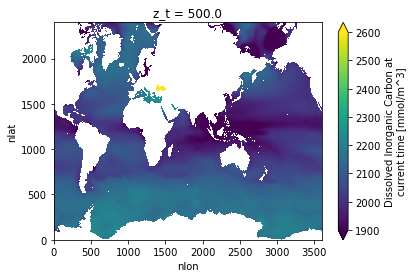
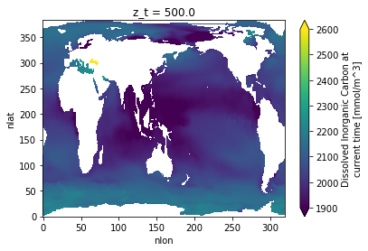
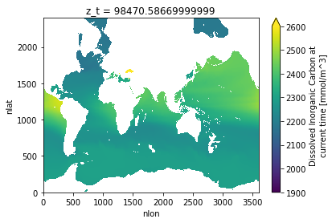
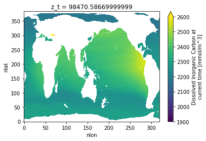
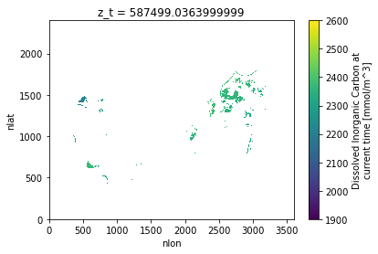
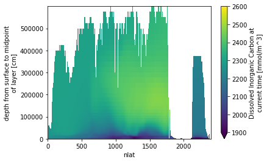
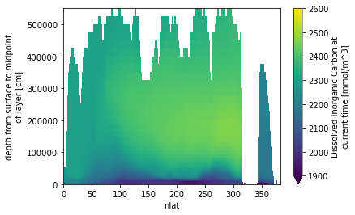

Regrid data to model grid#
%load_ext autoreload
%autoreload 2
import os
import subprocess
from glob import glob
import xarray as xr
import matplotlib.pyplot as plt
import matplotlib.colors as colors
import pop_tools
import util2
import numpy as np
from datetime import date, datetime, timezone
Setup parameters#
src_grid = 'POP_gx1v7'
dst_grid = 'POP_tx0.1v3'
method = 'conserve'
clobber = True
get_dst_grid = pop_tools.get_grid
def get_regridder(src_grid, dst_grid, method):
os.makedirs('data/regridding', exist_ok=True)
dst_grid_file= f'data/regridding/{dst_grid}.nc'
src_grid_file = f'data/regridding/{src_grid}.nc'
weight_file = f'data/regridding/{src_grid}_to_{dst_grid}_{method}.nc'
if not os.path.exists(src_grid_file) or clobber:
dso = get_dst_grid(src_grid, scrip=True)
print(f'writing {src_grid_file}')
dso['grid_imask'].data[:]=1
print(dso)
dso.to_netcdf(src_grid_file)
if not os.path.exists(dst_grid_file) or clobber:
dso = get_dst_grid(dst_grid, scrip=True)
print(f'writing {dst_grid_file}')
dso
dso.to_netcdf(dst_grid_file)
if not os.path.exists(weight_file) or clobber:
cmd = ['ESMF_RegridWeightGen', '--netcdf4', '--ignore_unmapped',
'-s', src_grid_file, '-d', dst_grid_file, '-m', method, '-w', weight_file]
out = subprocess.run(cmd, capture_output=True, check=True)
print(out.stdout.decode('UTF-8'))
return util2.regridder(src_grid_file, dst_grid_file, weight_file)
regrid_op = get_regridder(src_grid, dst_grid, method)
regrid_op
/glade/work/kristenk/miniconda/envs/analysis5/lib/python3.7/site-packages/numba/np/ufunc/parallel.py:365: NumbaWarning: The TBB threading layer requires TBB version 2019.5 or later i.e., TBB_INTERFACE_VERSION >= 11005. Found TBB_INTERFACE_VERSION = 6103. The TBB threading layer is disabled.
warnings.warn(problem)
writing data/regridding/POP_gx1v7.nc
<xarray.Dataset>
Dimensions: (grid_corners: 4, grid_rank: 2, grid_size: 122880, nreg: 13)
Coordinates:
* nreg (nreg) int64 0 1 2 3 4 5 6 7 8 9 10 11 12
Dimensions without coordinates: grid_corners, grid_rank, grid_size
Data variables:
grid_dims (grid_rank) int32 320 384
grid_center_lat (grid_size) float64 -79.22 -79.22 -79.22 ... 72.19 72.19
grid_center_lon (grid_size) float64 -39.44 -38.31 -37.19 ... -40.65 -40.22
grid_corner_lat (grid_size, grid_corners) float64 -78.95 -78.95 ... 71.96
grid_corner_lon (grid_size, grid_corners) float64 321.1 320.0 ... 320.0
grid_imask (grid_size) int64 1 1 1 1 1 1 1 1 1 1 ... 1 1 1 1 1 1 1 1 1
region_name (nreg) <U21 'Black Sea' 'Baltic Sea' ... 'Hudson Bay'
region_val (nreg) int64 -13 -12 -5 1 2 3 4 6 7 8 9 10 11
Attributes:
lateral_dims: [384, 320]
vertical_dims: 60
vert_grid_file: gx1v7_vert_grid
horiz_grid_fname: inputdata/ocn/pop/gx1v7/grid/horiz_grid_20010402.ieeer8
topography_fname: inputdata/ocn/pop/gx1v7/grid/topography_20161215.ieeei4
region_mask_fname: inputdata/ocn/pop/gx1v7/grid/region_mask_20151008.ieeei4
type: dipole
conventions: SCRIP
title: POP_gx1v7 grid
writing data/regridding/POP_tx0.1v3.nc
Starting weight generation with these inputs:
Source File: data/regridding/POP_gx1v7.nc
Destination File: data/regridding/POP_tx0.1v3.nc
Weight File: data/regridding/POP_gx1v7_to_POP_tx0.1v3_conserve.nc
Source File is in SCRIP format
Source Grid is a global grid
Source Grid is a logically rectangular grid
Use the center coordinates of the source grid to do the regrid
Destination File is in SCRIP format
Destination Grid is a global grid
Destination Grid is a logically rectangular grid
Use the center coordinates of the destination grid to do the regrid
Regrid Method: conserve
Pole option: NONE
Ignore unmapped destination points
Output weight file in NetCDF4 file format
Line Type: greatcircle
Norm Type: dstarea
Extrap. Method: none
Completed weight generation successfully.
source grid dims: (384, 320)
destination grid dims: (2400, 3600)
regridder POP_gx1v7.nc --> POP_tx0.1v3.nc
# def get_ClusterClient():
# import dask
# from dask_jobqueue import PBSCluster
# from dask.distributed import Client
# cluster = PBSCluster(
# cores=9,
# memory='256GB',
# processes=1,
# queue='casper',
# resource_spec='select=1:ncpus=9:mem=256GB',
# project='NCGD0011',
# walltime='04:00:00',
# interface='ib0',)
# dask.config.set({
# 'distributed.dashboard.link':
# 'https://jupyterhub.hpc.ucar.edu/stable/user/{USER}/proxy/{port}/status'
# })
# client = Client(cluster)
# return cluster, client
# cluster, client = get_ClusterClient()
# cluster.scale(12)
# client
tracernames = ['diazC', 'diazChl', 'diazFe', 'diazP',
'coccoC', 'coccoChl', 'coccoFe', 'coccoP', 'coccoCaCO3',
'microzooC','mesozooC',
'DOC', 'DOCr', 'DON', 'DONr', 'DOP', 'DOPr', 'NH4',
'Fe', 'Lig',
'ALK_ALT_CO2','DIC_ALT_CO2', #added these here
'NO3', 'PO4', 'SiO3', 'O2', 'DIC', 'ALK',
'spC', 'spChl', 'spFe', 'spP',
'diatC', 'diatChl', 'diatFe', 'diatP', 'diatSi',
]
refcase = 'g.e22.GOMIPECOIAF_JRA-1p4-2018.TL319_g17.4p2z.001'
refdate = '0306-01-01'
dirin_refcase = f'/glade/scratch/kristenk/archive/{refcase}/rest/{refdate}-00000'
fname_refcase = f'{dirin_refcase}/{refcase}.pop.r.{refdate}-00000.nc'
ds_out = pop_tools.get_grid(grid_name=dst_grid)
# add z_t_bounds
z_t_edges = np.concatenate(([0.0], np.cumsum(ds_out.dz)))
z_t_bounds_vals = np.stack((z_t_edges[:-1], z_t_edges[1:]), axis=1)
ds_out['z_t_bounds'] = xr.DataArray(z_t_bounds_vals, dims=('z_t', 'd2'),
coords={'z_t':ds_out.z_t})
ds_out['z_t'].attrs['bounds'] = 'z_t_bounds'
#ds_out
# generate 3D grid masks
def gen_MASK(ds_grid):
nk = len(ds_grid.z_t)
nj, ni = ds_grid.KMT.shape
# make 3D array of 0:km
zero_to_km = xr.DataArray(np.arange(0, nk), dims=('z_t'))
ONES_3d = xr.DataArray(np.ones((nk, nj, ni)), dims=('z_t', 'nlat', 'nlon'))
ZERO_TO_KM = (zero_to_km * ONES_3d)
# mask out cells where k is below KMT
MASK = ZERO_TO_KM.where(ZERO_TO_KM < ds_grid.KMT)
MASK = xr.where(MASK.notnull(), True, False)
MASK['z_t'] = ds_grid.z_t
return MASK
MASK_out = gen_MASK(ds_out)
(nk_out, nj_out, ni_out) = MASK_out.shape
grid_refcase = pop_tools.get_grid(grid_name=src_grid)
MASK_refcase = gen_MASK(grid_refcase)
(nk_refcase, nj_refcase, ni_refcase) = MASK_refcase.shape
ds_grid = pop_tools.get_grid('POP_gx1v7')
nk = len(ds_grid.z_t)
nj, ni = ds_grid.KMT.shape
ONES_3d = xr.DataArray(np.ones((nk, nj, ni)), dims=('z_t', 'nlat', 'nlon'))
MASK = xr.where(ONES_3d.notnull(), True, False)
do lateral fill on x1#
ds_refcase = xr.open_dataset(fname_refcase).rename({'k':'z_t', 'j':'nlat', 'i':'nlon'})
ds_refcase['z_t'] = ds_out['z_t'][0:nk_refcase]
filled_ds_refcase = xr.Dataset()
for v in tracernames:
print(v)
tracer = ds_refcase[v+'_CUR']
tracer = tracer.where(MASK_refcase)
# perform lateral fill
filled_ds_refcase[v] = pop_tools.lateral_fill(tracer, MASK, ltripole=False, use_sor=True, max_iter=1000)
diazC
diazChl
diazFe
diazP
coccoC
coccoChl
coccoFe
coccoP
coccoCaCO3
microzooC
mesozooC
DOC
DOCr
DON
DONr
DOP
DOPr
NH4
Fe
Lig
ALK_ALT_CO2
DIC_ALT_CO2
NO3
PO4
SiO3
O2
DIC
ALK
spC
spChl
spFe
spP
diatC
diatChl
diatFe
diatP
diatSi
Do gridding and vertical fill#
%%time
for v in tracernames:
print(v)
tracer = filled_ds_refcase[v]
#tracer = tracer.where(MASK_refcase)
ds_out[v] = regrid_op.regrid_dataarray(
filled_ds_refcase[v],
renormalize=True,
apply_mask=False) #changed from True
ds_out[v].attrs = ds_refcase[v+'_CUR'].attrs
ds_out.attrs = ds_refcase.attrs
# perform vertical fill
unfilled = ds_out[v].isnull() & (MASK_out == 1.)
if unfilled.any():
for k in range(1, nk_out):
ds_out[v][k, :, :] = xr.where(unfilled[k, :, :],
ds_out[v][k-1, :, :],
ds_out[v][k, :, :])
if (ds_out[v].isnull() & (MASK_out == 1.)).any():
print(f'{v} still has missing values')
ds_out[v] = ds_out[v].where(MASK_out == 1.)
diazC
diazChl
diazFe
diazP
coccoC
coccoChl
coccoFe
coccoP
coccoCaCO3
microzooC
mesozooC
DOC
DOCr
DON
DONr
DOP
DOPr
NH4
Fe
Lig
ALK_ALT_CO2
DIC_ALT_CO2
NO3
PO4
SiO3
O2
DIC
ALK
spC
spChl
spFe
spP
diatC
diatChl
diatFe
diatP
diatSi
CPU times: user 6min 37s, sys: 7min 48s, total: 14min 25s
Wall time: 15min 15s
# set derived quantities (from Keith's notebook)
#ds_out['DIC_ALT_CO2'] = ds_out['DIC']
#ds_out['ALK_ALT_CO2'] = ds_out['ALK']
DOCtot = ds_out['DOC'].copy()
DOCtot.values = ds_out['DOC'].values + ds_out['DOCr'].values
DOCtot.attrs['long_name'] = 'DOC + DOCr'
ds_out['DOCtot'] = DOCtot.where(MASK_out == 1.)
np.sum(np.isnan(ds_out.DIC.isel(z_t=0)))
<xarray.DataArray 'DIC' ()>
array(3237440)
Coordinates:
z_t float64 500.0xarray.DataArray
'DIC'
- 3237440
array(3237440)
- z_t()float64500.0
- units :
- cm
- long_name :
- depth from surface to midpoint of layer
- positive :
- down
- bounds :
- z_t_bounds
array(500.)
np.sum(1-MASK_out.isel(z_t=0))
<xarray.DataArray ()>
array(3237440)
Coordinates:
z_t float64 500.0xarray.DataArray
- 3237440
array(3237440)
- z_t()float64500.0
- units :
- cm
- long_name :
- depth from surface to midpoint of layer
- positive :
- down
- bounds :
- z_t_bounds
array(500.)
dirout = '/glade/scratch/kristenk/cesm_inputdata'
os.makedirs(dirout, exist_ok=True)
datestamp = date.today().strftime("%y%m%d")
fname_out = f'{dirout}/ecosys_jan_IC_{refcase}_{refdate}_{dst_grid}_c{datestamp}.nc'
print(fname_out)
/glade/scratch/kristenk/cesm_inputdata/ecosys_jan_IC_g.e22.GOMIPECOIAF_JRA-1p4-2018.TL319_g17.4p2z.001_0306-01-01_POP_tx0.1v3_c220701.nc
import util
# write generated file
datestamp = datetime.now(timezone.utc).strftime("%Y-%m-%d")
ds_out.attrs['history'] = f'created by Kristen Krumhardt on {datestamp}'
ds_out.attrs['input_file_list'] = fname_refcase
util.ds_clean(ds_out).to_netcdf(fname_out)
from subprocess import Popen, PIPE
def nco(cmd):
"""Interface to NCO"""
p = Popen(
' && '.join(['module load nco', ' '.join(cmd)]),
stdout=PIPE,
stderr=PIPE,
shell=True
)
stdout, stderr = p.communicate()
if p.returncode != 0:
print(stdout.decode('UTF-8'))
print(stderr.decode('UTF-8'))
raise
print("reformatting file")
nco(["ncks", "-O", "-5", fname_out, fname_out])
print("done")
reformatting file
done
Sanity check#
plot surface DIC#
ds_out.DIC.isel(z_t=0).plot(vmin=1900,vmax=2600);

ds_refcase.DIC_CUR.where(MASK_refcase==1).isel(z_t=0).plot(vmin=1900,vmax=2600);

plot DIC at 1000m#
ds_out.DIC.isel(z_t=39).plot(vmin=1900,vmax=2600);

ds_refcase.DIC_CUR.where(MASK_refcase==1).isel(z_t=39).plot(vmin=1900,vmax=2600);

Make sure that bottom layer of ds_out has some values#
ds_out.DIC.isel(z_t=61).plot(vmin=1900,vmax=2600);

transect up the Pacific#
ds_out.DIC.isel(nlon=3000).plot(vmin=1900,vmax=2600);

ds_refcase.DIC_CUR.where(MASK_refcase==1).isel(nlon=210).plot(vmin=1900,vmax=2600);
